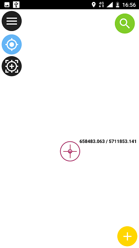

Outdated documentation
The latest documentation was moved to docs.qfield.org
To open a project, tap on Menu button --> Option button --> Open Project.
Select the project you want to open by navigating to it, or use the Recent projects and Favorites directories shortcuts.
Tap on a feature on the map to identify it. If several features are located on the point you tapped (either because there are multiple features really close one to another, or because several layers are overlapping), they will all be listed in the menu that opens on the right of the screen.

Tap on one of the listed feature to access its attributes.

Often it is not required to be able to query every layer. Some layers are only present as basemap and their attributes are not of interest.
You can manage this layerlist in QGIS desktop in and uncheck the base layers.
Tap on the Search button on the top-right corner to search in the layers.

If you defined map themes for your project in QGIS, you can switch between them using the first drop-down in the Main menu.

A short press on the GPS button will turn on the GPS and center to the current location once positioning information is available.
A long press on the GPS button will show the positioning menu.
Inside the positioning menu you can turn on the positioning display which will show the current coordinates which are reprojected into the project CRS along with precision information.

Note
If you see WGS 84 lat/lon information instead of information in your project CRS, you probably have no signal yet.
It is possible to provide a mock location a separate android app to qfield. There are several options for this, one of them is Android NTRIP Client.
To use this you have to enable mock locations on your Android device.
To start digitizing new features, enable the Edit mode in the main menu (pencil button) and select the layer on which you want to add a new feature (the layer will be highlighted in grey).

Navigate the crosshair in the center of the screen to the desired location and click the + button at the lower right of the screen to confirm the creation of a new point feature.
You can use the keep centered button to force the crosshair to center on your location if you have enabled the GPS.
Navigate the crosshair in the center of the screen to the desired start of the line or polygon and click the Plus (+) button at the lower right of the screen to add the first node.
Proceed with adding points to form you line or polygon by clicking the Plus (+) button each time you want to add a new node.
Click the Minus (-) button to remove the last added node.
Click the Close (X) button to cancel the feature creation completely.
When you have added a least 2 nodes for a line or 3 nodes for a polygon, a Save button will appear. Click on it to finish your sketch.

After digitizing a geometry, the attribute form will be displayed if it is not suppressed and the user will be asked to enter the attributes for the new feature. The form which appears allows entering attribute values for the new feature. The checkboxes at the right of every attribute allow for remembering each attribute individually. The next time you will add a feature on the same layer, these attributes will be already pre-filled.

Deleting features is only possible in digitize mode.
To delete a feature, identify it first and tap the trash icon.
To complete.